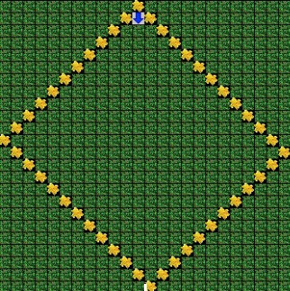
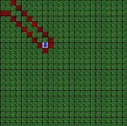
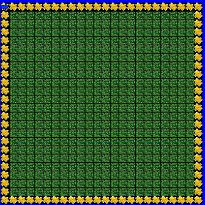
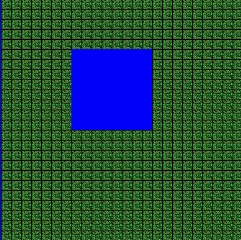
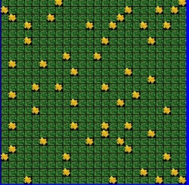
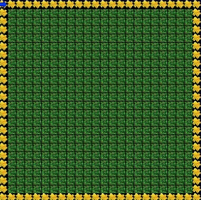
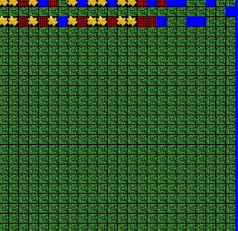
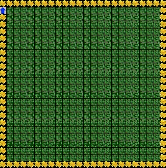

In Unit 1 we learned the basic concepts of Jeroo. We learned how to make the Jeroo hop and plant the flowers to make different shapes. We learned how to use the hop and turn LEFT and RIGHT to make a diamond. We also learned how to not make the jeroo crash into the water and only write the hop program hop just enough times.
Diamond
FencedIn
In Unit 2 we learned how to use different code and multiple Jeroos to make loops and programs. We learned to make different methods to make the jeroo turn in different ways and move. We learned to make the methods move very precisley so the jeroo does not die when it touchees the net.
Flowers
Water
In Unit 3 we learned how to make loops and an intro to make infinite loops. The loops were a bit more basic but we learned how to make the jeroo go across the screen in a more efficent way. In unit one we had to write the code one by one that took a very long time. But now with loops, we can have a couple simple programs the does the same as the long code in a faster and easier way.
Pinball
Flowers2
In Unit 4 we learned in more depth to make loops and while statements. We learned how to make code and methods inside loops to make the jeroo go in different directions according to the code. The loops were harder to make because they needed to make the jeroo aviod many different blocks such as the net and other dangerous one to the jeroo. We learned to use the while block to make the program run continuously
AlleyRun
Recursive Box
